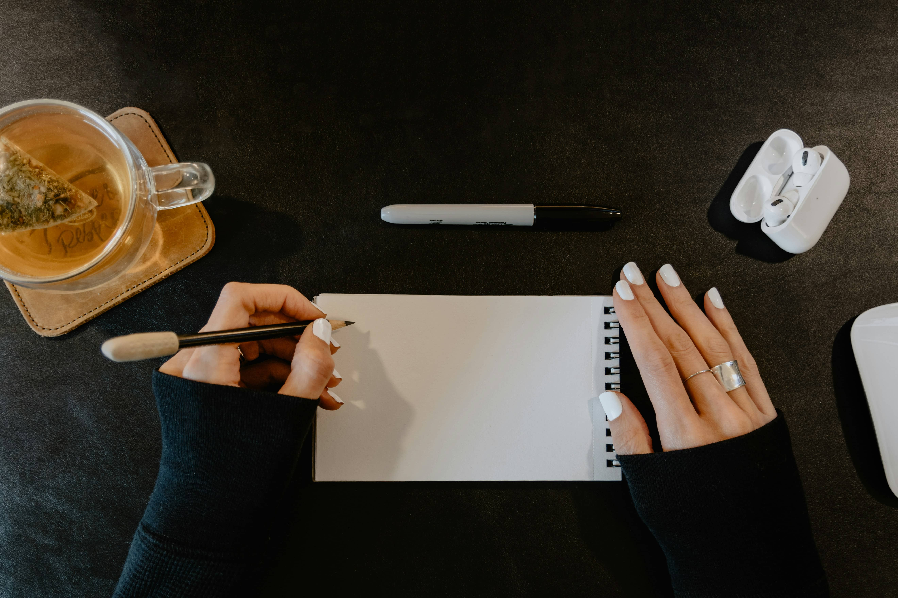

17C Studio / Project proposal / No. 001
A digital home
for your next
chapter.
A thoughtful website for a business with something good to share. Made to feel like you, and built to move you forward.
Explore the proposal
01 / The intention
Your work has a story.
Let’s make it clear.
Fieldwork is ready for a website that reflects the care behind the work—and makes it easier for the right people to get in touch.
For this sample project, we’re imagining an independent creative studio moving from a simple holding page to a complete digital home. The goal is a clear introduction, a considered portfolio, and an easy path from “I love this” to “let’s talk.”
Feel like you.
A visual direction rooted in your personality, your work, and what makes your studio different.
Make it easy.
Clear navigation and considered content that help visitors find what they need.
Open the door.
A straightforward inquiry experience that gives potential clients a natural next step.
02 / What we’ll create
Small details.
A complete picture.
A custom five-page website, from the first conversation to the final launch. Here’s what that includes.
Strategy & direction
A discovery conversation, content outline, sitemap, and visual direction to give the project a clear starting point.
Website design
Custom designs for Home, About, Services, Work, and Contact, with layouts for desktop and mobile. Includes two consolidated rounds of design revisions.
Development & testing
A responsive website, contact form setup, page titles and descriptions, image optimization, and keyboard and browser checks.
Launch & handoff
Domain connection support, a recorded walkthrough, and 14 days of post-launch support for issues within the agreed scope.
You’ll provide final copy, brand assets, and photography. Copywriting, brand identity, e-commerce, paid tools, and ongoing maintenance would be scoped separately.
03 / The process
A little structure.
Room to collaborate.
An estimated six weeks from kickoff to launch, with space for thoughtful feedback along the way.
- Week 01
Listen & discover
Get to know the business, gather your content, and agree on the direction.
- Weeks 02–03
Explore & design
Bring the visual direction to life, then refine it together through two feedback rounds.
- Weeks 04–05
Build & refine
Develop the approved designs, add your content, and test the experience across screen sizes.
- Week 06
Launch & settle in
Complete a final review, connect your domain, and walk through your new website.
Timing assumes all content is ready at kickoff and consolidated feedback arrives within two business days. A start date would be confirmed together.
04 / Your investment
Considered work.
Clear investment.
Website strategy, design & development
$4,800 USD
Sample fixed project fee for the scope above.
- 50% To reserve your project
- $2,400
- 50% Before launch & handoff
- $2,400
Illustrative pricing only. Hosting, domain registration, third-party subscriptions, and any applicable taxes are additional and would be confirmed before an agreement.
05 / The details
Good work starts with
shared expectations.
What I’ll need from you
One point of contact, your brand files and final content before kickoff, and consolidated feedback at each milestone. We’ll agree on the best way to communicate before the project begins.
Feedback & changes
The sample scope includes two consolidated rounds of design revisions and one final review of the developed site. New pages, features, or changes to an approved direction would receive a separate estimate for approval before work begins.
After your website launches
The sample includes 14 days of support to resolve issues with the agreed work. Future content updates, new features, and ongoing maintenance can be discussed as a separate project or care arrangement.
From proposal to project
This page is a mock proposal for a fictional client. A real project would begin with a finalized scope, a signed agreement, an initial payment, and a mutually confirmed start date.
06 / What’s next
Something good
starts with a conversation.
Have a project in mind? Tell me a little about your business, where you’re headed, and what you’d love your website to do.
Let’s talk mariel@17c.studioMariel
Designer & developer, 17C Studio